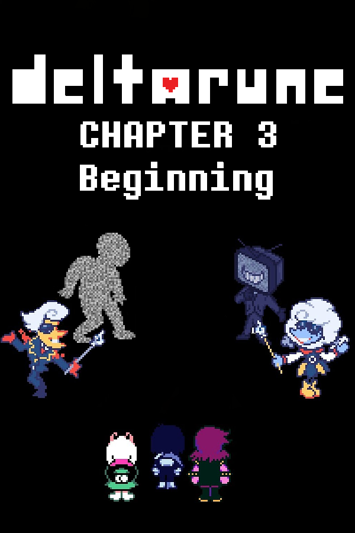

Deltarune (Chapters 3+4)
Every archived year-end list appearance, including placement and points earned.
About the Game
Here to download the game? Download Chapter 1 & 2 for free now using the orange "Download" button at the bottom. Chapter 1&2をダウンロードしたい方は、このページの下にあるオレンジ色の「Download」ボタンをクリックして下さい。 OK, now onto the description... The next adventure in the UNDERTALE series has appeared! Fight (or spare) alongside new characters in UNDERTALE's parallel story, DELTARUNE...! Featuring A massive soundtrack and story written by Toby Fox! Meet new and endearing main characters, as well as familiar faces like Toriel, Sans, as more. Huh? Papyrus? No, he's busy. Sorry Smooth and expressive pixel-animation by Temmie. She also has a new hat (in-game) A linear, chapter-based system that you can pick up from anywhere. Creative bullet-dodging based battles inspired by games like Touhou and Chrono Trigger. Jevilishly difficult hidden bosses. And... ... ... only 1 ending...? Chapters 3-5 are now in development and will someday be available as a paid release. Follow the official twitter for extremely sparse up to date info! Want to support the game? Buy the soundtrack!
| Released | 2018-10-30 |
|---|---|
| Developer | 8-4, Toby Fox |
| Publisher | 8-4, Toby Fox |
| Genres | Adventure, RPG |
| Platforms | PlayStation 5, macOS, Nintendo Switch, PlayStation 4, PC |
Singleplayerrole-playingJRPGMusicBullet HellGameMakerDogs
Metacritic: 81
Where to Buy
Game information provided by RAWG.
Points by Year
List History
| Year | Source | List | Placement | Points |
|---|---|---|---|---|
| 2025 | Geeky Brummie | Top 50 Most Notable Games of 2025 | 25 | 3 |